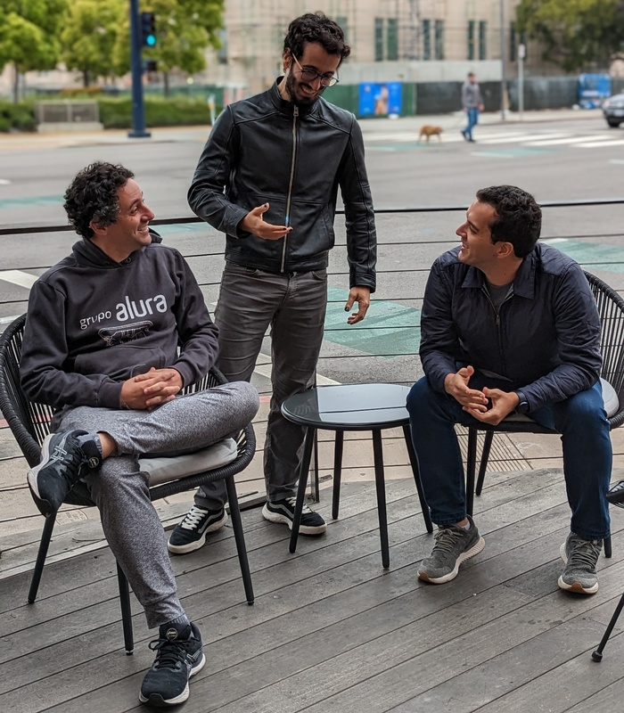

- Escola
- Estudante

A Escola Alura foi fundada em 2010 e tem como objetivo ensinar Pensamento Computacional, através do ensino de Programação.A turma mais estudiosa e famosa é a Segunda Série A. Nós somos super unidos e a turma favorita por todos os professores e professoras que nos ajudam!
A Caelum começou a crescer, assim como a demanda de estudantes de várias regiões do Brasil. Ensinar em um espaço físico impunha algumas limitações, ao mesmo tempo que Guilherme e Paulo tinham dúvidas sobre a qualidade das aulas remotas. Até que, em 2011, Guilherme conheceu uma plataforma online de idiomas que chamou sua atenção. Existia uma analogia com as salas de aula e estudantes conseguiam interagir e trocar informações mesmo à distância. “Algumas plataformas estavam mudando o significado de estudar online, decidimos testar e trazer uma experiência diferente. Era uma forma de alcançarmos mais gente e crescermos como empresa. Era positivo do ponto de vista educacional e comercial”, Guilherme conta. Neste mesmo ano, nascia a plataforma online da Caelum. Em 2013, com o crescimento da abordagem de ensino online, a plataforma é rebatizada como Alura. Juntos, Adriano, Guilherme e Paulo fundaram o que se tornaria a maior escola online de tecnologia do país.
Os anos de experiência com educação ajudaram os empreendedores a tomarem decisões mais inteligentes, o que foi decisivo para o crescimento da Alura já nos seus primeiros anos. “Ao longo do tempo, fizemos várias apostas, todas conscientes, mesmo as que não deram certo. Amadurecemos a sensibilidade de enxergar quais delas faziam sentido. Há dez anos atrás, a gente atiraria para todos os lados. Hoje, temos muito mais foco e clareza”, diz Adriano. Todo esse foco deu certo. Atualmente, a Alura oferece mais de 1.400 cursos para mais de 800 mil estudantes ativos, que aprendem quando e onde quiserem com uma comunidade colaborativa.